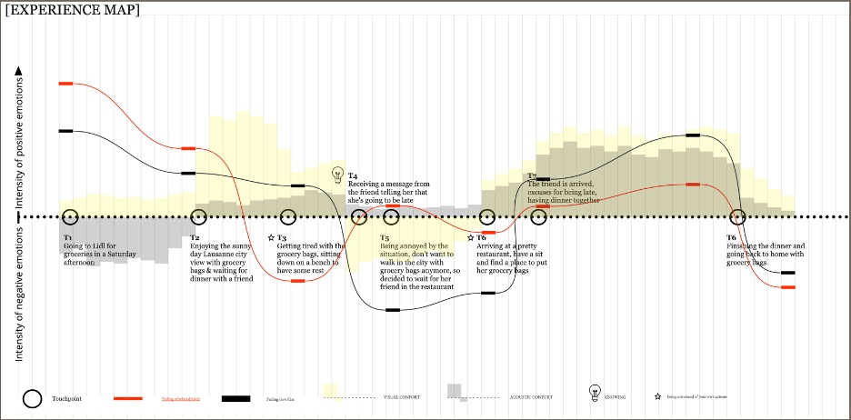
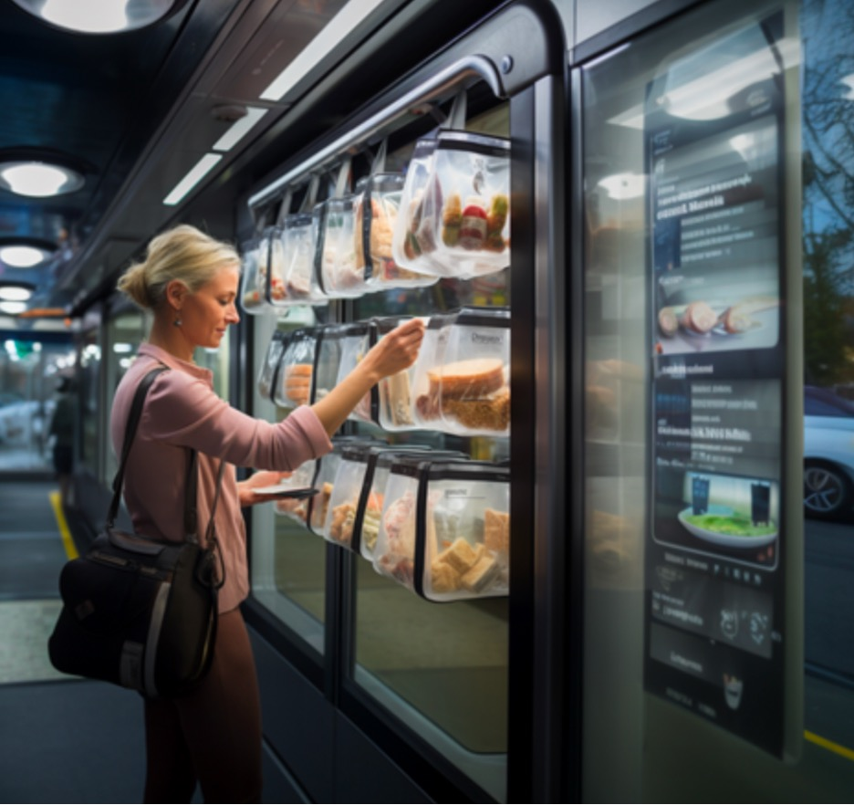

Avni Mohan
Grocery shopping is an essential part of our daily lives. Yet, the groceries we buy should not hold us back from doing other activities. After getting two full bags of groceries, it is hard to walk or use other forms of public transportation to do other activities. In addition, storing grocery bags can be a challenge, discouraging us from wanting to take our grocery bags with us.
Middle aged people who have cars may prefer to use cars to grocery shop when they have plans to do something after shopping. The convenience of the car does not force them to carry their groceries and offers storage for groceries while they do their next activity. Carrying groceries into public transport may also be hard as there is limited space in buses and metros.
Finally, keeping groceries in the bag for an extended period may decrease the freshness of perishable items since its not in a fridge or freezer.
It's a Saturday afternoon and a middle aged woman has dinner plans with her friend at 7 pm. However, she also realises that she must do her groceries today as stores are closed on Sunday and she doesn't have a lot of time during the week. She lives in the suburbs of the city and travels into the city to do her groceries.
After shopping, there is no time to drop the groceries back home before dinner, but her friend is running late. With the extra time, she wants to walk around the serene streets of Lausanne. There is no choice but to carry the groceries around the city as she walk. Carrying bags of groceries up the slopes of Lausanne is tiring, so she decides to go to restaurant to wait.
Upon reaching the small, intimate restaurant she chose, she realizes that there is little space for her groceries. As there is not much space, she has to wait for her friend with her grocery bags on the table. Dinner with her friend was going great until they were ready to depart. This is when she realizes that she has to carry the groceries all the way back home.
TransCarry lockers and transport improves the shopping experience by addressing a challenge - carrying heavy grocery bags after shopping. Those who desire to go shopping often premptively choose to drive in, in the case that they will have bags of shopping after that they would need to bring home. By removing this emotional and physical obstacle, the solution tackles the reliance of vehicles.
We improved the most important touchpoint, the train station. The mobility hub that bringing residents into the city and shopping centres. These are strategic locations to implement TransCarry lockers. If you decide to take the train, you are likely to be walking up and down stairs and through walkways to platforms. With your groceries, it can be quite difficult. TransCarry lockers are placed at convenient points near the station. Bags placed in lockers are moved to the customers destination once requested on the app.
Impact and Relevance on the city: Emission Reduction: It reduces the desire and reliance of personal vehicles for doing a grocery runs and shopping trips by reducing difficulties with carrying the bags. Therefore, curbing emissions and enhancing sustainability Efficiency in Logistics: Optimizing delivery of groceries, reducing traffic congestion and strain on city roadways. Promotion of Public Transit: This solution promotes the use of trains and improves confidence in using public transport for chores and other activities that they wouldn't have used before. Grocercy runs are often a weekly routine activity, this may encourage people to purchase public transport subscriptions, which would encourage the use even more.
Impact on the journey: Allows customers to do more in the city and not feel restricted by the bags, reducing stress and allows them mobility freedom.